Setting the stage
Branded video templates were a top enterprise request and a key blocker to adopting Clipchamp over competitors like Loom, Canva, and Pitchy. Additionally, the then-org’s OKRs were centered around democratizing video creation and growth, and a branded video templates feature was well-poised to create user and business impact. Strong customer demand led Marketing to promise a November feature announcement, forcing a tightly scoped delivery.
“Branded templates are very important to us and we currently use Pitchy to configure the organization's colors and logos. [...][Now that] Clipchamp has templates, we can discuss transitioning some users from Pitchy.”
Three users, one feature
I already had a solid understanding of the target user group because of previous research done by the Clipchamp editor team. From prior surveys and interviews, we knew designing an effective and impactful video templates feature meant considering three distinct users.
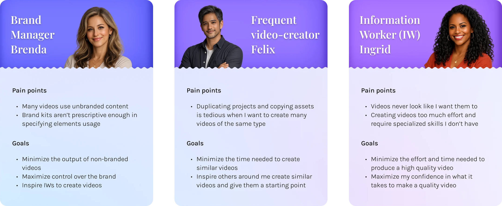
Key user flows
From these 3 users and their goals came 5 distinct jobs:
- Creation
- Management
- Distribution
- Discovery
- Use
These became my key user scenarios that I designed for. I did 4 iterations and then a final spec, each with feedback gathering in between via Figma comments. Engineering was involved in the 3rd iteration and gave comments on feasibility and cost. 3 of the most interesting flows were creating, sharing, and editing a template because of their complexity in catering to the two creation users defined above.
Creating a template
The designs needed to cater to brand admins with high intent to create a template and to IWs who would likely have delayed intent to create templates retroactively after completing a video project. To design for both these intents, there's a button to "create template from project" inside the editor as well as a "new video template" button in a separate video hub that power users frequent.
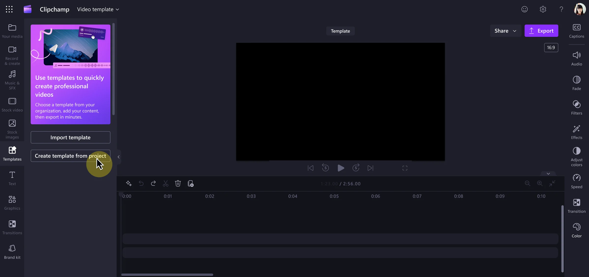
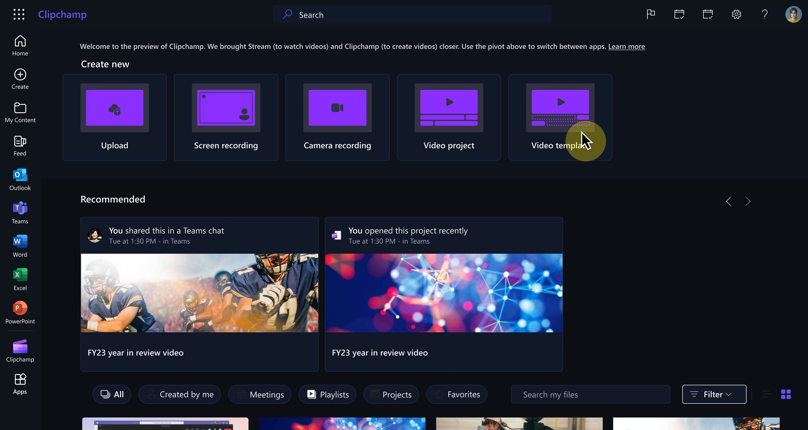
Distributing a template
Similar to creation above, different users have different intents. IW template creators would likely share only to close collaborators via a share link, while brand admins want to distribute templates through brand kits and have them automatically populated in the editor for use. The designs reflect both of those use cases and user scenarios.
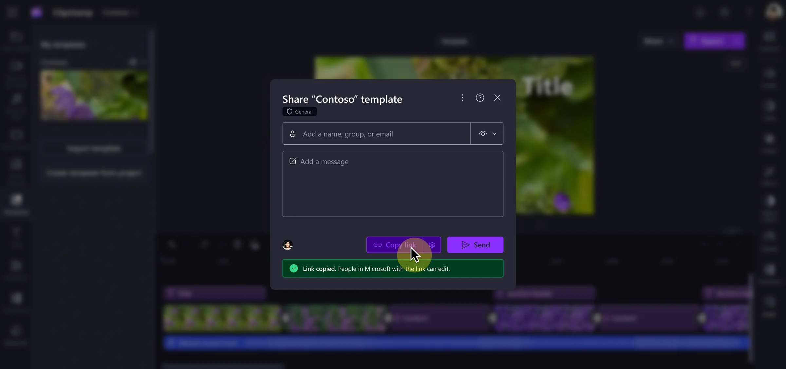
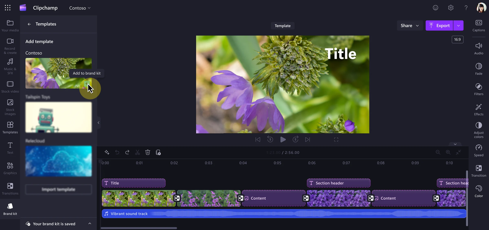
Editing a template
With editing, it was harder to bridge the gap between the user personas. While brand admins would expect to edit a template file exclusively, IW template creators would want to retain access to the video project from which the template was created. To address this IW need, we decided the "create template from project" flow would duplicate the file and convert it into a template instead of rewriting the current video project as a template. For brand admins, this created an extra dead-end video project file which wasn't ideal, but this decision aligned with our OKRs of supporting IWs in video creation. Making the distinction clear on what file was being edited (the original video project or the template) after the template was created was key.
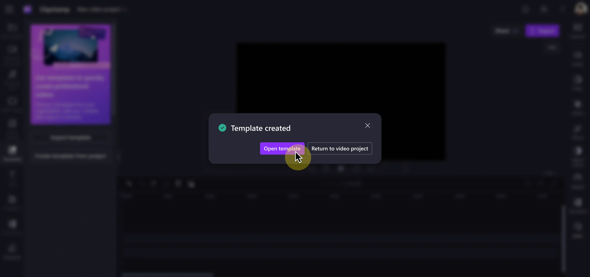
Final designs
Once the 5 user flows had passed through multiple rounds of feedback I finalized the designs and created a spec. While the spec didn't contain every feature I initially designed, all features that were scoped out through the rounds of iteration and costing were collected in a "future features" list to be saved for later.
Implementation
The engineers and I had a great working relationship and we communicated through twice-weekly standups, Figma comments, and a Teams thread. I reviewed PRs and designed error states as needed. Our templates feature successfully shipped in November and was featured in a blog post at Ignite.
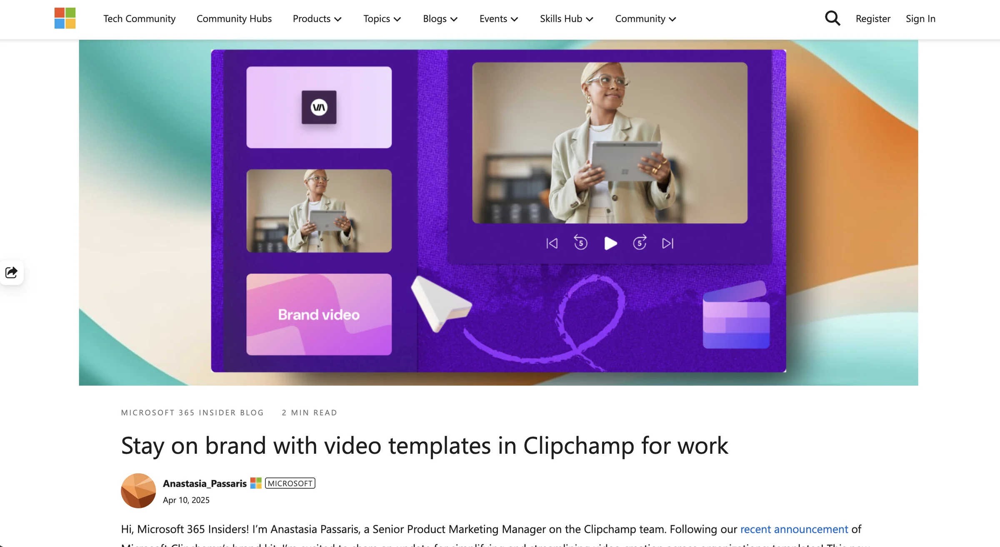
Opportunities for Improvement
Especially because the project was tightly scoped, there were a few design shortcomings that I wish were addressed before shipping but weren’t because of the Ignite conference deadline.
- The email a user receives when a template is shared with them is the boilerplate Microsoft shared file email, and we weren’t able to customize it without significant cost. As a result, users don’t know the file shared with them is a template and face barriers to using it in the editor. I wish we were able to prioritize customizing that email even if it was on behalf of the partner team who owned that experience.
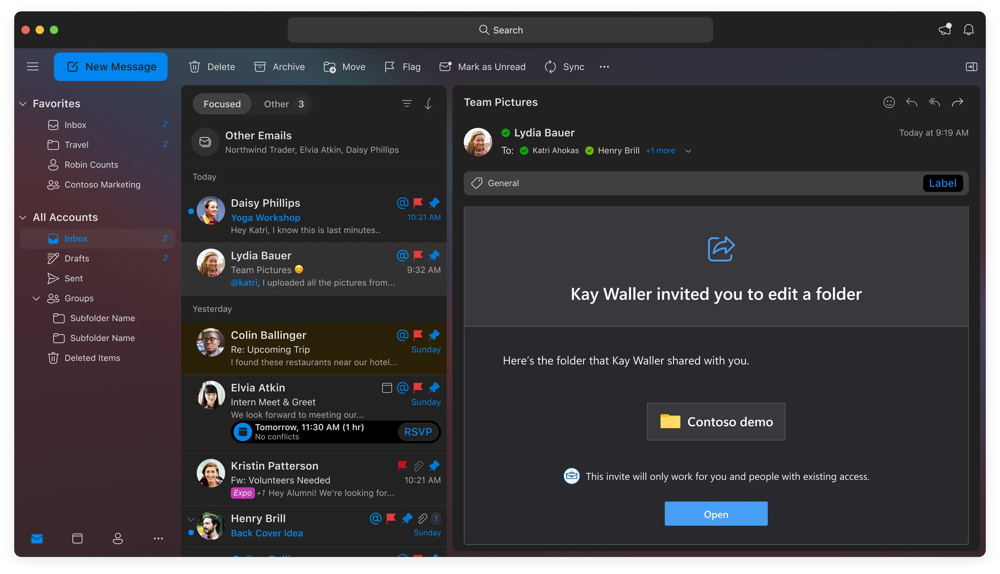
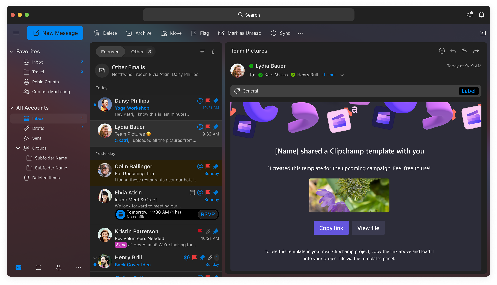
- It was disappointing that we weren’t able to provide a library of existing video templates for users to choose from. The only templates available to users are ones someone intentionally creates, which diminishes the reach of the feature especially for IW video creators.
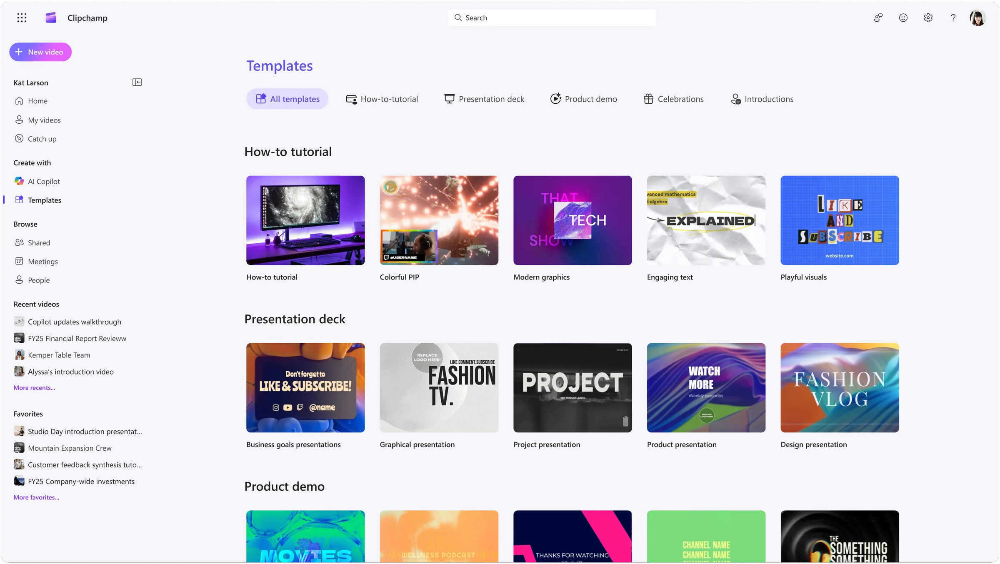
- The implementation includes the ability to add a template to a timeline of a video project, but the template doesn't have placeholder components to swap personal content. As a result, the template is nothing more than just grouped assets, which can be difficult and time consuming to fit around personal content. Placeholders were being developed by another team at the time, and I wish we considered a dependency on that work.
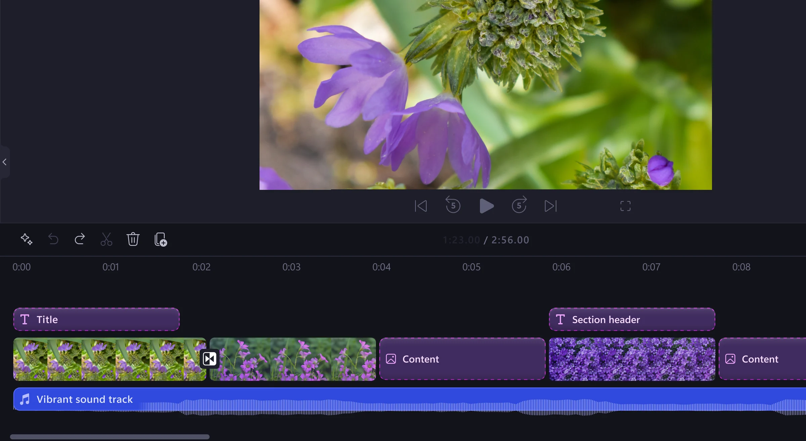